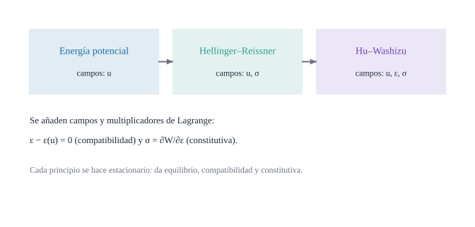

Energía potencial, Hellinger–Reissner y Hu–Washizu: de uno a tres campos

Figura 21.1: Tres principios variacionales de la elasticidad y los campos que se varían en cada uno: energía potencial (solo el desplazamiento \(\mathbf{u}\)), Hellinger–Reissner (\(\mathbf{u}\) y la tensión \(\boldsymbol\sigma\)) y Hu–Washizu (\(\mathbf{u}\), la deformación \(\boldsymbol\varepsilon\) y \(\boldsymbol\sigma\)). Esquema conceptual, ilustrativo.
Qué significa que una ecuación diferencial «salga» de pedir que una energía sea estacionaria, y para qué sirve variar más de un campo a la vez
Objetivos y prerrequisitos
Objetivos. Al terminar el tema sabrás:
enunciar el principio de los trabajos virtuales y la energía potencial total\(\Pi(\mathbf{u})\);
escribir los funcionales de Hellinger–Reissner y de Hu–Washizu (versión genérica);
ver qué ecuación sale de variar cada campo (equilibrio, compatibilidad, ley constitutiva);
resolver una barra con los tres principios y comprobar que dan lo mismo;
explicar para qué sirven los principios mixtos en elementos finitos de lámina.
fuerzas de volumen y tracciones aplicadas en el contorno \(\Gamma_t\)
\(\delta\)
variación (virtual)
21.1 Los trabajos virtuales
Definición 21.1 (Principio de los trabajos virtuales) Un campo de tensiones \(\boldsymbol\sigma\) está en equilibrio con las fuerzas \(\mathbf{b},\bar{\mathbf{t}}\) si y solo si, para todo desplazamiento virtual \(\delta\mathbf{u}\) (compatible y nulo donde está impuesto), \[
\int_V\boldsymbol\sigma:\varepsilon(\delta\mathbf{u})\,dV=\int_V\mathbf{b}\cdot\delta\mathbf{u}\,dV+\int_{\Gamma_t}\bar{\mathbf{t}}\cdot\delta\mathbf{u}\,dS .
\tag{21.1}\] El primer miembro es el trabajo virtual interno, el segundo el externo.
Con el teorema de la divergencia (B5), \(\int\sigma^{ij}\delta u_{i\|j}dV=\int_{\Gamma}\sigma^{ij}n_j\delta u_i\,dS-\int\sigma^{ij}{}_{\|j}\delta u_i\,dV\). Si se cumple el equilibrio \(\sigma^{ij}{}_{\|j}+b^i=0\) (D1) y \(\sigma n=\bar{\mathbf{t}}\) en \(\Gamma_t\), se obtiene ecuación 21.1. Recíprocamente, si ecuación 21.1 vale para todo \(\delta\mathbf{u}\), el lema fundamental del cálculo de variaciones da el equilibrio y la condición de contorno. \(\square\)
ecuación 21.1 no usa ninguna ley constitutiva: vale para cualquier material. Es la forma débil del equilibrio, y el punto de partida de los elementos finitos.
21.2 Energía potencial total
Con un material elástico, \(\boldsymbol\sigma=\partial W/\partial\boldsymbol\varepsilon\) (D2), y ecuación 21.1 se vuelve la condición de estacionariedad de \[
\Pi(\mathbf{u})=\int_VW\bigl(\varepsilon(\mathbf{u})\bigr)\,dV-\int_V\mathbf{b}\cdot\mathbf{u}\,dV-\int_{\Gamma_t}\bar{\mathbf{t}}\cdot\mathbf{u}\,dS .
\tag{21.2}\]
Proposición 21.1 (Mínimo de la energía potencial) La solución del problema elástico lineal con \(W>0\)minimiza\(\Pi\) entre los desplazamientos admisibles. Variar \(\mathbf{u}\) en ecuación 21.2 recupera ecuación 21.1.
Para una lámina (D7), \(W\) se sustituye por la energía por unidad de superficie ecuación 20.4: \[
\Pi(\mathbf{u},\boldsymbol\varphi)=\int_A U\bigl(\gamma^0(\mathbf{u}),\gamma^1(\mathbf{u},\boldsymbol\varphi),\gamma_S(\mathbf{u},\boldsymbol\varphi)\bigr)\,dA-\text{(trabajo de las cargas)},
\tag{21.3}\] con \(\gamma\) dadas por ecuación 19.1. Es el funcional que discretizan los elementos de desplazamientos puros; sus limitaciones (bloqueo, D5) motivan los principios mixtos.
21.3 Principios mixtos
En un principio mixto se tratan varios campos como independientes y se imponen algunas ecuaciones de forma débil en lugar de por construcción.
Definición 21.2 (Hellinger–Reissner (dos campos: \(\mathbf{u}\), \(\boldsymbol\sigma\)))\[
\Pi_{HR}(\mathbf{u},\boldsymbol\sigma)=\int_V\bigl[\boldsymbol\sigma:\varepsilon(\mathbf{u})-W^*(\boldsymbol\sigma)\bigr]dV-\int_V\mathbf{b}\cdot\mathbf{u}\,dV-\int_{\Gamma_t}\bar{\mathbf{t}}\cdot\mathbf{u}\,dS .
\tag{21.4}\] Variar \(\boldsymbol\sigma\) da la ley constitutiva (\(\varepsilon(\mathbf{u})=\partial W^*/\partial\boldsymbol\sigma\)) y variar \(\mathbf{u}\) da el equilibrio.
Definición 21.3 (Hu–Washizu, versión genérica (tres campos: \(\mathbf{u}\), \(\boldsymbol\varepsilon\), \(\boldsymbol\sigma\)))\[
\Pi_{HW}(\mathbf{u},\boldsymbol\varepsilon,\boldsymbol\sigma)=\int_V\bigl[W(\boldsymbol\varepsilon)+\boldsymbol\sigma:\bigl(\varepsilon(\mathbf{u})-\boldsymbol\varepsilon\bigr)\bigr]dV-\int_V\mathbf{b}\cdot\mathbf{u}\,dV-\int_{\Gamma_t}\bar{\mathbf{t}}\cdot\mathbf{u}\,dS .
\tag{21.5}\] Las tres variaciones dan las tres ecuaciones del problema elástico:
Cada campo independiente «lleva» una ecuación: en energía potencial, compatibilidad y constitutiva se imponen; en Hu–Washizu las tres se obtienen. Eso permite discretizar \(\boldsymbol\varepsilon\) con un espacio distinto del de \(\mathbf{u}\), que es lo que hace que un elemento no bloquee.
AdvertenciaEsta es la versión genérica
ecuación 21.5 es el funcional general. El libro desarrolla después una versión específica de Hu–Washizu para el elemento de lámina, con la deformación interpolada por subdominios; se tratará en el bloque de elementos finitos (tema E7) y se contrastará con esta. Aquí solo se asegura que el punto de partida es correcto.
NotaUn poco de historia: de Hellinger a Hu y Washizu
El funcional de Hellinger–Reissner fue propuesto por Hellinger en 1914; Reissner fijó su energía externa y sus condiciones de contorno en 1953. El principio de tres campos se asocia con los nombres de Hu Haichang (1954–1955) y Kyūichirō Washizu (1955), que lo publicaron de forma independiente. Una nota señala que el funcional canónico general ya había sido deducido por Fraeijs de Veubeke en un informe técnico de 1951, por lo que la prioridad es discutida.
¿Qué ecuación se obtiene al variar \(\boldsymbol\sigma\) en el funcional de Hu–Washizu?
la compatibilidad \(\boldsymbol\varepsilon=\varepsilon(\mathbf{u})\)
el equilibrio
la ley constitutiva
la condición de contorno natural
El único término con \(\delta\boldsymbol\sigma\) es \(\delta\boldsymbol\sigma:(\varepsilon(\mathbf{u})-\boldsymbol\varepsilon)\), cuya anulación para todo \(\delta\boldsymbol\sigma\) es la compatibilidad.
El principio de los trabajos virtuales ecuación 21.1 es válido para cualquier ley constitutiva.
Verdadero. Solo expresa equilibrio; la ley constitutiva interviene al evaluar \(\boldsymbol\sigma\).
21.4 Una barra con los tres principios
Ejemplo 21.1 (Ejemplo resuelto: barra traccionada) Barra de longitud \(L\), rigidez axial \(EA\) y fuerza \(P\) en el extremo libre (empotrada en \(x=0\)). Con el campo lineal \(u=a\,x\) (el único admisible con una función de forma lineal), \(\varepsilon=a\).
Energía potencial.\(\Pi(a)=\tfrac12EA\,a^2L-P\,aL\). Estacionariedad: \(EA\,a\,L-PL=0\Rightarrow a=P/(EA)\) y \(u(L)=PL/(EA)\).
Hu–Washizu con \(\varepsilon=e\) y \(\sigma=s\) constantes: \(\Pi_{HW}=A L\bigl[\tfrac12Ee^2+s(a-e)\bigr]-P\,aL\). Las tres derivadas dan: \(\partial_s\): \(a=e\); \(\partial_e\): \(s=Ee\); \(\partial_a\): \(AL\,s-PL=0\Rightarrow s=P/A\). Luego \(e=P/(EA)\) y se recupera lo mismo. Con \(P=10\,000\) N, \(L=2000\) mm y \(EA=2{,}1\cdot10^7\) N: \(u(L)=0{,}952\) mm.
En el Ejemplo 21.1, ¿cuánto vale el alargamiento \(u(L)=PL/(EA)\) para \(P=10\,000\) N, \(L=2000\) mm y \(EA=2{,}1\cdot10^7\) N?
\(10\,000\cdot2000/2{,}1\cdot10^7=0{,}9524\) mm.
21.5 Práctica guiada en Julia
TipEjemplo computacional
calculado Se resuelve la barra como punto estacionario de \(\Pi\) y de \(\Pi_{HW}\) (el sistema lineal de las tres derivadas), y se comprueba que dan el mismo desplazamiento.
usingLinearAlgebraE, A, L, P =210e3, 100.0, 2000.0, 10_000.0# Energía potencial: Π(a) = ½ EA a² L − P a L → dΠ/da = 0a_pot = P / (E * A)# Hu–Washizu con (a, e, s) constantes: Π = A L [½ E e² + s (a − e)] − P a L# Derivadas = 0: ∂a: A L s − P L = 0 ; ∂e: A L (E e − s) = 0 ; ∂s: A L (a − e) = 0K = [00 A*L; 0 A*L*E -A*L; A*L -A*L 0]f = [P * L, 0.0, 0.0]a_hw, e_hw, s_hw = K \ f(u_L_potencial = a_pot * L, u_L_HW = a_hw * L, e= e_hw, s = s_hw, P_sobre_A = P / A)
(u_L_potencial = 0.9523809523809523, u_L_HW = 0.9523809523809523, e = 0.0004761904761904762, s = 100.0, P_sobre_A = 100.0)
21.6 Ejercicios
Energía complementaria. Para \(\sigma=Ee\) en 1D, calcula \(W^*(\sigma)\).
NotaSolución
\(W^*(\sigma)=\sigma^2/(2E)\); coincide numéricamente con \(W\) en el régimen lineal.
Hellinger–Reissner en la barra. Escribe ecuación 21.4 con \(u=ax\), \(\sigma=s\) constante y obtén \(a\) y \(s\).
NotaSolución
\(\Pi_{HR}=AL[s\,a-s^2/(2E)]-PaL\). \(\partial_s\): \(a=s/E\); \(\partial_a\): \(s=P/A\). Luego \(a=P/(EA)\).
Un campo menos. ¿Qué ecuación deja de obtenerse si en Hu–Washizu se elimina \(\boldsymbol\sigma\) imponiendo \(\boldsymbol\varepsilon=\varepsilon(\mathbf{u})\)?
NotaSolución
Queda la energía potencial: la compatibilidad se impone fuertemente y \(\boldsymbol\sigma\) se calcula de la constitutiva. Es la reducción a un campo de ecuación 21.2.
La doy por superada si…
Escribo el principio de los trabajos virtuales y sé que no depende del material.
Deduzco el equilibrio de la estacionariedad de \(\Pi(\mathbf{u})\).
Distingo Hellinger–Reissner y Hu–Washizu por los campos independientes y las ecuaciones que cada variación aporta.
Resuelvo una barra por los tres caminos.
Sé que la versión del libro para el elemento de lámina es una Hu–Washizu específica, distinta de la genérica.
NotaFuentes, correcciones y qué queda pendiente
Fuentes. Texto autónomo; principios variacionales estándar de la elasticidad (Lebedev y Cloud 2003; Romano et al. 2006). El ejemplo de la barra es analítico y se comprueba en Julia.
Qué queda pendiente. La versión de Hu–Washizu específica por subdominios (E7) y su contraste con ecuación 21.5; la demostración de la mínima energía es un enunciado, no una prueba completa; nota histórica con fuentes secundarias (años de Hu en discusión); figuras con revisión visual pendiente; referencias no leídas línea a línea.
Romano, A., R. Lancellota, y A. Marasco. 2006. Continuum Mechanics using Mathematica. Birkhäuser, Boston.
Lebedev, L. P., y M. J. Cloud. 2003. Tensor Analysis. World Scientific.
Referencias
Son las mismas que aparecen en el margen, junto al texto.
Lebedev, L. P., y M. J. Cloud. 2003. Tensor Analysis. World Scientific.
Romano, A., R. Lancellota, y A. Marasco. 2006. Continuum Mechanics using Mathematica. Birkhäuser, Boston.